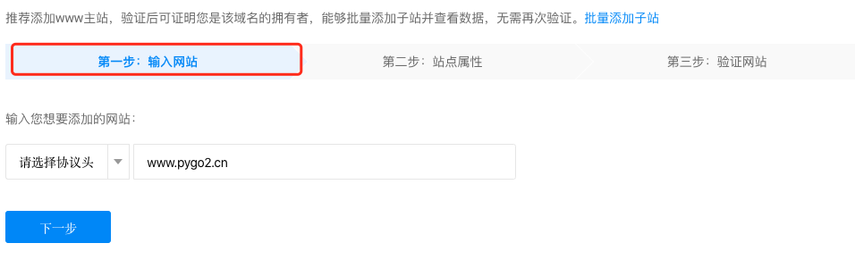
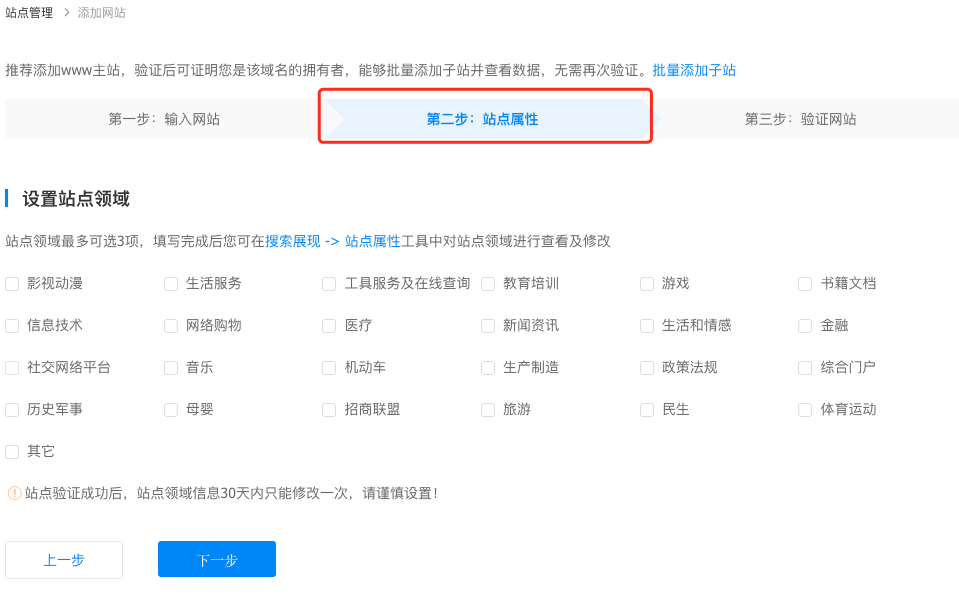
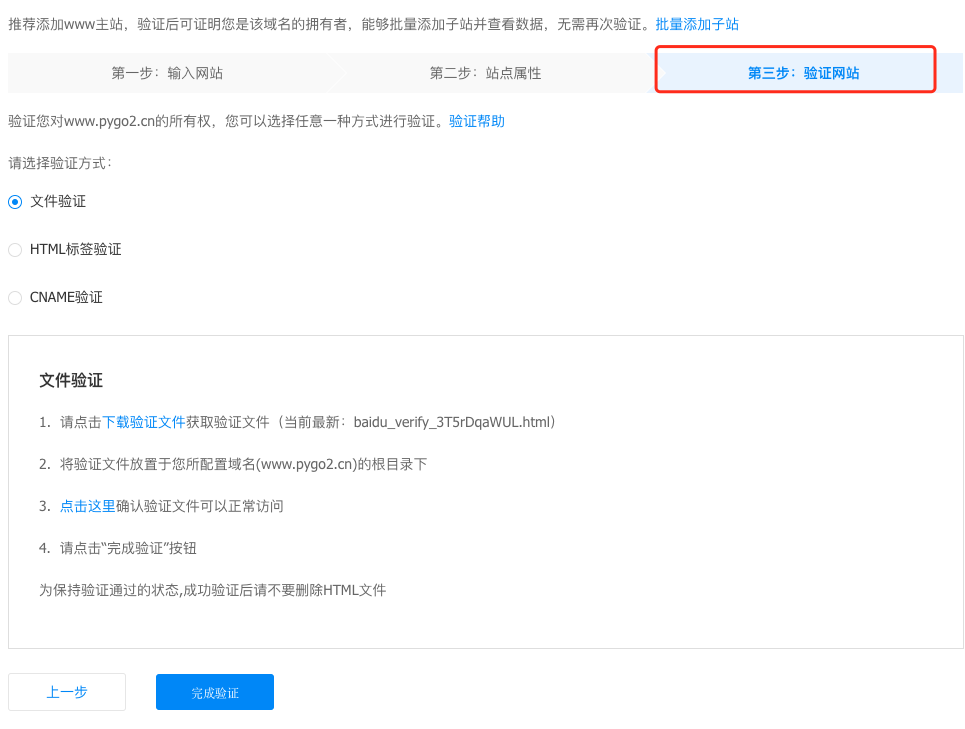

Hexo+Next搜索优化（三）baidu搜索
背景
博客运行有一年多了，之前写了关于google搜索与网站SEO优化相关的内容，希望自己的博客在baidu搜索上也可以排名，但是还不想花钱，只好通过技术来解决这个难题了。
优化了baidu SEO还可以装13，通过搜索就可以搜索到你博客的内容，带来了流量，在准备弄个广告位进行赚点外快，何乐而不为。
正文
本文讲解实现对baidu搜索引擎对网站的搜索优化，Hexo+Next搜索优化教程第三篇，之前已经写了关于google搜索以及blog本身优化的文章，欢迎查阅。
安装hexo-generator-sitemap
在blog根目录，执行一下命令：
1
npm install hexo-generator-baidu-sitemap --save在blog/public目录下会自动生产一个baidusitemap.xml文件，里面的内容不用多说了，都是blog的url信息。
添加蜘蛛协议
打开blog/source目录下的robots.txt文件，最后一行，也就是Sitemap下添加以下内容：
1
Sitemap: https://pygo2.cn/baidusitemap.xmlAllow、Disallow之前已经解释过了，不过看英语也知道啥意思了：Allow字段的值即为允许搜索引擎爬区的内容；Disallow就是不允许搜索引擎爬区的内容。
示例：1
2
3
4
5
6
7
8
9
10
11
12
13
14
15
16
17
18User-agent: *
Allow: /
Allow: /archives/
Allow: /articles/
Allow: /categories/
Allow: /tags/
Allow: /messagepad/
Allow: /resources/
Allow: /about/
Disallow: /vendors/
Disallow: /js/
Disallow: /css/
Disallow: /fonts/
Disallow: /vendors/
Disallow: /fancybox/
Sitemap: http://pygp2.cn/sitemap.xml
Sitemap: http://pygp2.cn/baidusitemap.xmlbaidu站长设置
前提：需要一个baidu账号，没有的请自行注册。

验证baidu账号信息

  填写站点相关信息并验证
网站验证有三种方式：
- 文件验证
- html验证
- CNAME验证
在这里采用html验证的方式，将以下代码放到blog/source/root.html文件的head标签内，然后再执行hexo clean && hexo g -d命令，重新生成blog。
1
<meta name="baidu-site-verification" content="3T5rDqaWUL" />因为本人网站是自定义的一个root.html域名首页，如果不是把以上代码添加到blog/themes/layout/_partials/head.swig内即可。
链接提交
进入到链接提交功能。

选择链接提交的方式
链接方式两种：
- 手动提送
- 自动提交
– 主动推送
– 自动推送
– sitemap
自动化提交
sitemap设置提交
在链接提交功能页。

主动推送
在说明上有curl、post、php等几种方式，本人使用curl + python + crontab(linux)的方式在服务器上做个定时自动推送。
python脚本：1
2
3
4
5
6
7
8
9
10
11
12
13
14
15
16
17
18
19
20
21
22
23
24
25
26
27
28
29
30
31
32
33
34
35
36
37
38
39
40
41
42
43
44
45
46
47
48
49
50
51
52
53
54
55
56
57
58
59
60
61
62
63
64
65
66
67
68
69
70
71
72
73
74
75
76
77
78
79
80# -*- coding: utf-8 -*-
"""
------------------------------------------------
describe:
自动化推送blog的url到百度
usage:
python auto_baidu_push.py
base_info:
__version__ = "v.10"
__author__ = "mingliang.gao"
__time__ = "2019/07/18"
__mail__ = "mingliang.gao@163.com"
思路：
获取blog全部的url，生成url.txt文本，使用baidu站点的curl命令进行数据自动化推送，删除url.txt文件。
------------------------------------------------
"""
import os
import shutil
# 本机
HTML_REL_DIR = '/Users/gaomingliang/github/myblog/pygo/public/articles'
# 服务器
# HTML_REL_DIR = '/opt/www/blog/articles'
PUSH_baidu_COMMAND = 'curl -H "Content-Type:text/plain" --data-binary @urls.txt "http://data.zz.baidu.com/urls?site=www.pygo2.cn&token=VqQF08BReWjBB018"'
DOMAIN_TEPM = 'http://www.pygo2.cn/articles'
URL_NAME = 'urls.txt'
def get_cur_dir():
return os.path.abspath(os.path.dirname(__file__))
class BlogRequests(object):
def __init__(self):
self.article_source = HTML_REL_DIR
self.cur_dir = get_cur_dir()
def collect_codes(self):
"""
get all article codes
:return: list type
"""
return os.listdir(self.article_source)
def generator_url_text(self):
all_codes = self.collect_codes()
if not all_codes:
print '============== not codes'
return False
url_file = os.path.join(self.cur_dir, URL_NAME)
if not os.path.exists(url_file):
fd = open(url_file, mode="w")
fd.close()
with open(url_file, 'w') as f:
for code in all_codes:
url = DOMAIN_TEPM + '/%s/' % code
f.write(url)
# 换行符
f.write('\n')
return url_file
def run(self):
url_file = self.generator_url_text()
if url_file:
os.system(PUSH_baidu_COMMAND)
print '-------------end-------------'
if __name__ == '__main__':
br = BlogRequests()
br.run()linux服务器上的crontab：
1
1 23 * * * python2 /home/mingliang.gao/crontab/auto_baidu_push.py
结束
不积跬步,无以至千里;不积小流,无以成江海。